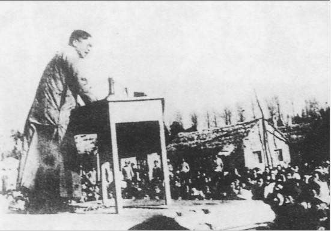
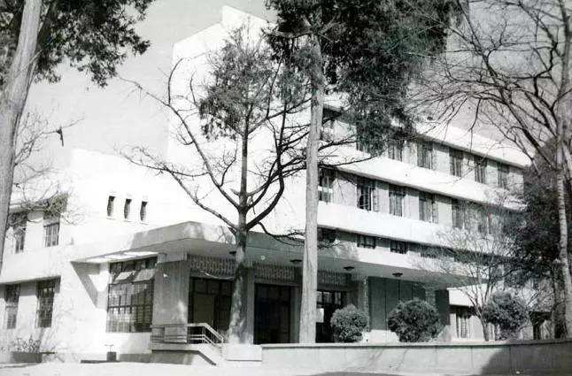

·Departments
The faculties and departments of National Southwest Associated University were slightly developed and adjusted on the basis of the original faculties and departments of National Changsha Temporary University.

A chemistry teacher was
conducting an
experiment outside
At the end of July 1938, in accordance with the order of the Ministry of Education of China, the Department of Aeronautical Engineering was established on the basis of the Aeronautical Engineering Section of the Department of Mechanical Engineering. In early August 1938, teachers College was established in accordance with the ministry's order. The "education" part of the Department of Philosophy, Psychology and Education of the College of Arts was merged with the Department of Education of Yunnan University to form the Department of Education, which was put under the normal College. The department of Philosophical psychology education was changed to the Department of Philosophical Psychology, still a faculty of arts. The normal College has departments of civic training, Chinese literature, English, history and geography, mathematics, physics and chemistry.
On June 1940, the Department of History and Sociology was divided into the Department of History and the Department of Sociology in accordance with the order of the Ministry of Education of the Republic of China. After 1941, the Department of Sociology was placed under the Faculty of Law and Business, while the Department of History remained in the Faculty of Arts.

Affiliated Middle School of NASU
In the autumn of 1940, the affiliated school of Normal College was opened, with primary school and junior high school at first. Later, senior high school was developed year by year, renamed as the affiliated middle school and the Affiliated primary school. In 1944, National Southwest Associated University (NSWU) resumed its name of normal education specialty. The university consisted of 5 colleges, 26 departments, 2 specialties and 1 pre-study class, making it one of the largest institutions of higher learning in China at that time.
·Buildings

Teaching Environment
The building committee decided to build some three-story brick houses based on the teaching needs and the available construction funds. During the construction process, the tin roofs were not available and the building funds were not available, so the student dormitories had to be roofed with thatch, which was completed in April 1939. In addition to the library and the two canteens, only the classrooms were left with tin roofs, and the student dormitories and offices were all thatched.

Building Distribution
The new school building is located in the northwest of Kunming, built on both sides of the road around the city, covering an area of more than 120 acres. The north side of the road is called the north area, covering a wider area, the north school gate for two wooden gates. The dirt road divides the north district into two parts, east and west. The eastern half is larger, with a concentration of classrooms, offices of various departments, library, and east and west cafeterias. The western half is the student dormitory and the sports field.

Destroyed and Rebuilt
On September 28, 1938, the staff dormitory of the National Southwest United University was bombed, and on October 6, the 89th Standing Committee discussed and decided to relocate the two colleges of grammar and one of the colleges of teacher training to the Panlong Temple in Jining, and to prepare for the construction of the entire school building in the area of Panlong Temple, so as to prepare for the relocation of other colleges one after another. Most of the images recorded now are of the reconstructed NASU.
·Teachers
According to the "History of Southwest United University" edited by the Beijing Alumni Association in 1996, there were 3,750 students and faculty members, 370 teachers, 400 staff (including doctors and technicians), and 400 police officers, including 200 full-time administrators. There were more than 300 professors and associate professors who taught at the National Southwest United University. In 1939, for example, there were 269 teachers in the university, including 89 from Peking University, 150 from Tsinghua University, and 30 from Nankai. Here are some famous professors.
| Affiliated Departments | Professor Directory |
|---|---|
| Standing Committee | Menglin , Mei Yiqi, Zhang Boling |
| Faculty of arts | Zhu Ziqing, Feng Youlan, Wen Yiduo, Qian Zhongshu |
| Faculty of Science | Hua Luogeng, Chen Xingshen, Zhou Peiyuan |
·Students
From 1938 to 1946, the school graduated a total of 3,343 students. According to the "History of National Southwest United University" edited by the Beijing Alumni Association in 1996, from 1937 to 1946, a total of 8,000 students passed the entrance examination of the university, and eventually nearly 2,500 undergraduates and about 200 specialists graduated from the university; 1,280 undergraduates and 74 postgraduates graduated from Peking University, Tsinghua University and Nankai University. In total, about 4,000 students graduated, which was the largest number of graduates in China at that time.
During the eight years of the war, more than 1,100 students from the National Southwest United University joined the military, of which 834 are engraved on the back of the monument of the National Southwest United University, including many young people who took the initiative to join the military, including Mei Zuyan , son of Tsinghua University President Mei Yiqi, a member of the committee of the United University. In addition to serving as interpreters, NASU students joined the Chinese Expeditionary Force and the Air Force. Between 1942 and 1945, 1,500 Chinese and American soldiers shed their blood to ensure the smooth passage of the "Hump" air route. Among them were NASU students, according to records.